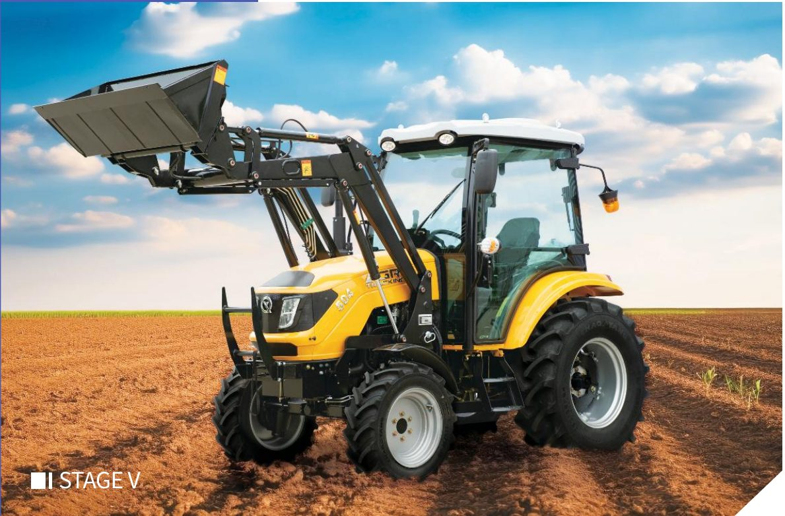
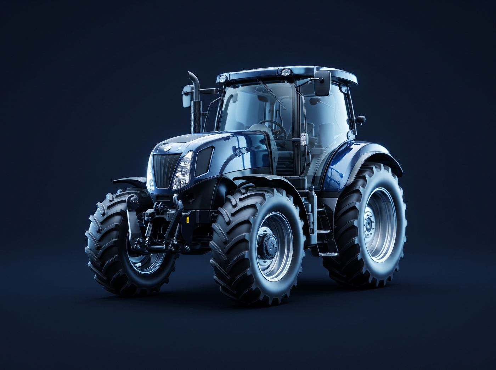
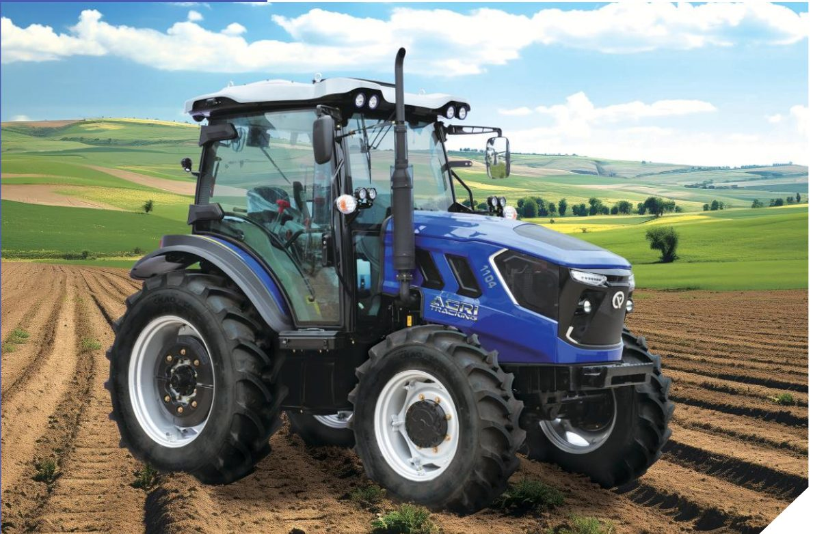

Otto modelli, motori Stage V
Dalla piccola azienda agricola al lavoro intensivo: gamma attuale 25–125 HP, tutta con motorizzazione Stage V. Prezzi FOB indicativi, consegna 35 giorni.

TE254
Motore Laidong Stage V, cambio TE 8+8, PTO 540/1000 a 6 innesti, sedile Grammer, sollevatore a pressione forzata.
TE404
Motore Laidong Stage V, frizione Runcheng 9", cambio TE 8F+8R sincronizzato, doppia uscita idraulica, serbatoio ausiliario.
TE504
Motore Laidong Stage V 4 cilindri, cabina climatizzata Platinum, freni pneumatici a doppia linea, volante regolabile.

TD904
Motore YTO Stage V 4 cilindri, frizione 12", cambio TF 16+8 navetta, assale anteriore Guhe, PTO 540/1000.
TD1004
Motore YTO Stage V 4 cilindri, cambio TF 16+8, carreggiata regolabile, cabina Platinum climatizzata, camera 360°.
TD1154
Motore Yuchai Stage V 4 cilindri, frizione 14" a doppio effetto, tre gruppi di uscite idrauliche, freno di stazionamento.

TD1204
Motore Yuchai Stage V 4 cilindri, carreggiata a variazione continua, camera 360°, tergicristallo posteriore, martello di sicurezza.
TD1254
Top di gamma classe TD: motore Yuchai Stage V 4 cilindri, stessa piattaforma TF 16+8, contrappesi maggiorati anteriori e posteriori.
Prossimamente
Gamma Stage V da 130 a 260 HP attualmente in sviluppo, ciclo stimato circa 70 giorni. Contattaci per essere aggiornato sul lancio.